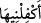

“Böyle iken “Onu da bana ver” dedi” (
), (
) anlamında kullanılmış olup
esasen, elimin altındakilere baktığım gibi ona da bakayım demektir. (
), kadına
bakıp nafakasını temin eden kişidir.
“Ve tartışmada beni yendi.” Yâni kendisiyle konuşurken, reddetmem mümkün
olmayan bir takım deliller getirmek sûretiyle bana galebe çaldı.
İbn Abbâs (r.a.)’dan da şöyle bir yorum rivâyet edilir: (Doksan dokuz koyunu olan
kardeşim) benimle konuşurken, bir hükümdar olması hasebiyle daha güçlü ve yüce bir
pozisyonda bulunuyordu. el-Vesît’ta da belirtildiği gibi buna göre mânâ,
hükümranlığının gücünden dolayı benimle konuşurken daha cür’etkâr konuşabiliyordu,
şeklindedir.
24. Dâvûd: Andolsun ki, senin koyununu kendi koyunlarına katmak istemekle
sana haksızlıkta bulunmuştur. Doğrusu ortakçıların çoğu, birbirlerinin haklarına
tecâvüz ederler. Yalnız îman edip de iyi işler yapanlar müstesnâ. Bunlar da ne
kadar az! dedi. Dâvûd, kendisini denediğimizi tahmin etti ve Rabbinden mağfiret
dileyerek eğilip secdeye kapandı, tevbe edip Allah’a yöneldi.
“Dâvûd: Andolsun ki, senin koyununu kendi koyunlarına katmak istemekle sana
haksızlıkta bulunmuştur...dedi.” Dâvûd, hakkında şikâyet bulunan kişinin de itiraf
etmesiyle yahut dâvâcının doğru söylediğini takdir ederek bu sözü söylemiştir. Yoksa
henüz ötekini dinlemeden iki dâvâcıdan birinin doğru söylediğine hükmedivermenin
anlamı yoktur. Hadiste: “Meclisine iki dâvâcı geldiği zaman, ötekini de dinlemeden
biri lehinde hükmetme.”[11] buyurulmuştur.
“(
) Andolsun ki ... sana haksızlıkta bulunmuştur”, ifâdesi, ibârede yer
almayan bir kasemin cevabı olup Dâvûd (a.s.) bununla, arkadaşının yaptığı fiili ne
kadar kötü gördüğünü ifâde etmeyi ve bir sürü koyunu olan birinin, başka koyunu
olmayan birinin koyununa göz dikmesinin çirkinliğini göstermeyi hedeflemiştir.
“Senin koyununu kendi koyunlarına katmak istemekle...” Buradaki “isteme”
anlamına gelen (
) kelimesi, mef’ûlüne izâfe edilmiş bir masdar olup izâfe etme ve
ekleme mânâlarını tazammun ettiğinden, anlamı bir başka mef’ûle (
) harfiyle
geçmekte, müteaddî olmaktadır. Bir başka yoruma göre ise senin koyununu isteyip talep